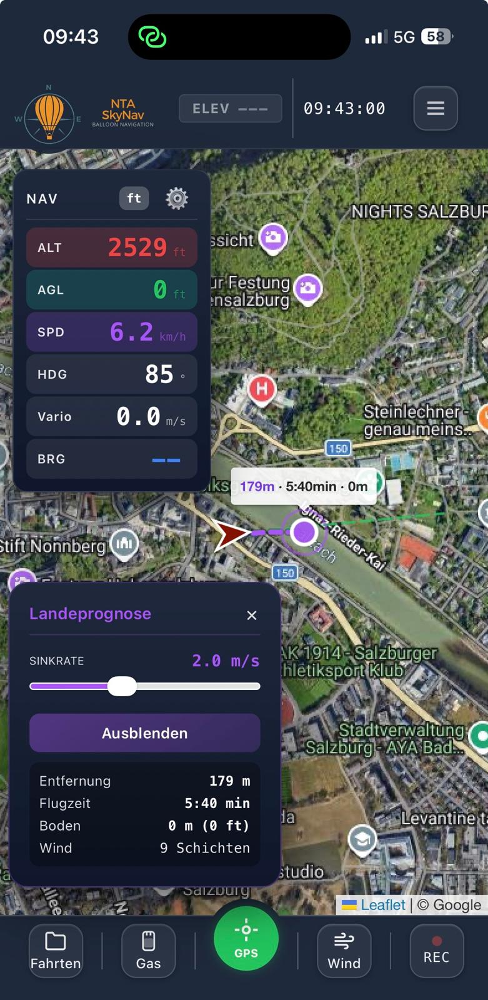
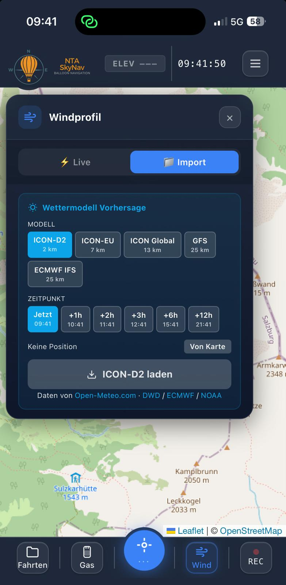
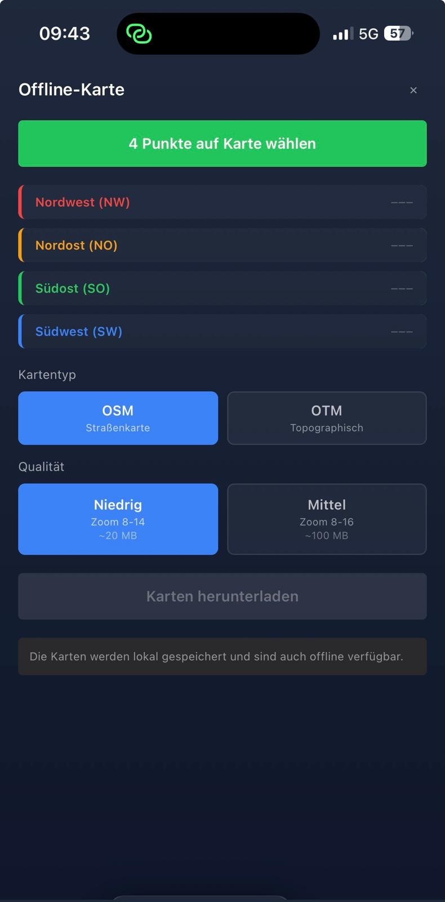
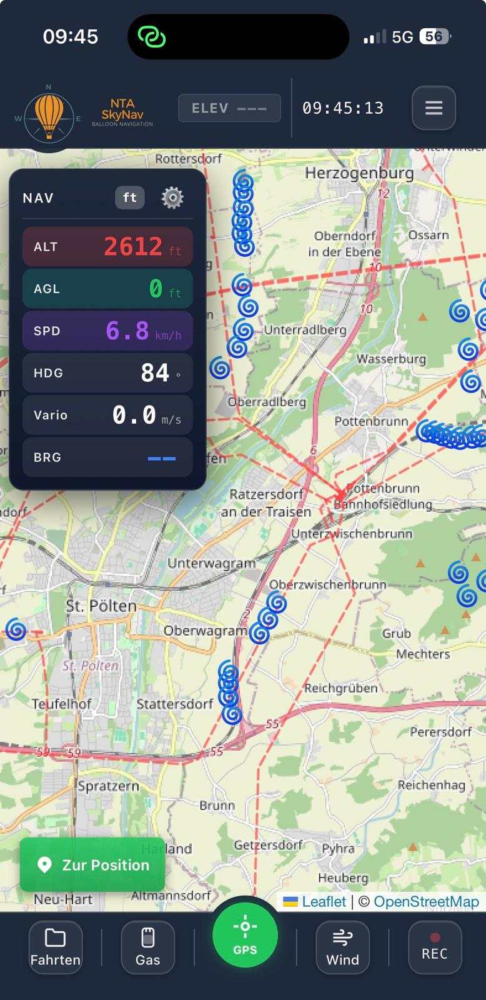
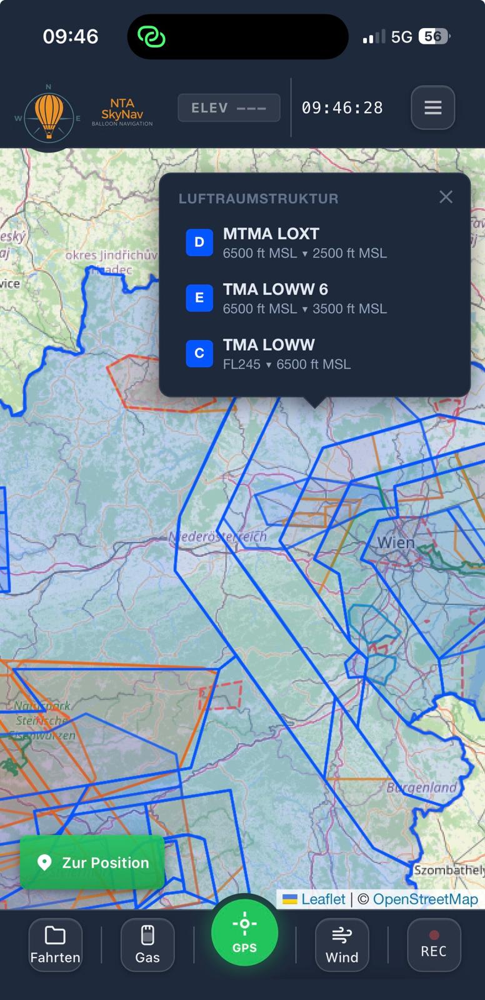
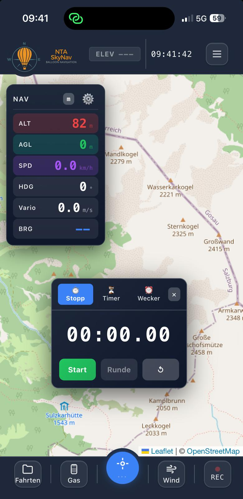

Gebaut für die Ballonfahrt
Jede Funktion wurde von einem aktiven Ballonpiloten entwickelt. Kein generisches Luftfahrt-Tool – sondern speziell für die Ballonfahrt gebaut. Von der Startplanung mit Wettermodellen über die Navigation in der Luft bis zur automatischen Fahrtendokumentation im Logbuch – alles in einer App, die auch komplett offline funktioniert.
GPS Navigation & Karten
Präzise GPS-Daten in Echtzeit: Höhe (MSL & AGL), Geschwindigkeit, Heading und QNH-korrigierte Barometerhöhe. Höhendaten (HGT) können importiert oder direkt in der App heruntergeladen werden für präzise AGL-Berechnung.
- GPS-Anzeige: ALT (m/ft), AGL, SPD (km/h), HDG (°), ELEV, Koordinaten
- QNH-Korrektur für präzise Druckhöhe
- HGT-Höhendaten importieren oder in-App herunterladen
- Präzise AGL-Berechnung (Höhe über Grund) in jedem Gelände
- ICAO-Karten mit Lufträumen (A–G), CTR, TMA
- OSM + OpenTopoMap als Basiskarten
- Offline-Karten: Bereich wählen & downloaden
- Positionsmarker mit Heading-Anzeige und Trail

Landeprognose
Berechnet den voraussichtlichen Landepunkt basierend auf aktueller Position, Wind und einstellbarer Sinkrate. Live auf der Karte angezeigt.
- Prognosepunkt live auf der Karte dargestellt
- Sinkrate (m/s) individuell einstellbar
- Berücksichtigt aktuelle Windrichtung und -stärke
- Hilft bei der Wahl des Landepunkts während der Fahrt
- Aktualisiert sich automatisch mit jeder Positionsänderung

Load Calculator
Professionelle Tragkraftberechnung nach physikalischen Formeln. GO/NO-GO Entscheidung auf einen Blick.
- Ballonprofil mit Hüllenvolumen und MTOW hinterlegen
- QNH, Temperatur und Startplatzhöhe als Eingabe
- Individuelle Passagiergewichte (bis 20 Passagiere)
- Bruttotragkraft, Gesamtgewicht, Reserve, Nutzlast
- GO/NO-GO Entscheidung mit MTOW- und MLW-Prüfung
- Ergebnis wird automatisch im Logbuch gespeichert


Gas Management
Behalte den Überblick über deinen Gasvorrat. Flaschen einzeln verwalten, Verbrauch pro Fahrt tracken und immer wissen, wie viel noch übrig ist.
- Gasflaschen individuell anlegen und benennen
- Füllstand per Slider oder manuell einstellen
- Verbrauch pro Fahrt automatisch berechnet
- Restmenge in Litern und Prozent
- Daten werden im Logbuch mitgespeichert
- Excel-Export mit Flaschen-Details pro Fahrt

5 Wettermodelle in einer App
Von der hochauflösenden Nahbereichs-Vorhersage bis zum globalen Modell – du hast alle relevanten Wetterdaten direkt in der App. Windrichtung und Windstärke als Overlay auf der Karte.
- ICON-D2 – 2km Auflösung, ideal für Mitteleuropa
- ICON-EU – europäische Abdeckung
- ICON Global – weltweite Vorhersage
- ECMWF IFS – europäisches Referenzmodell
- GPS Live-Daten – Echtzeit-Wind vom Gerät
- Zeitauswahl bis +12 Stunden voraus
- Windprofil als Overlay direkt auf der Karte
- Powered by Open-Meteo.com (freie Wetterdaten)

Karten & Offline-Download
Zwei Kartentypen zur Auswahl, beide offline verfügbar. Mit dem 4-Ecken Download-System lädst du genau das Gebiet herunter, das du brauchst.
- OSM (OpenStreetMap) – Straßen, Wege, Ortschaften
- OpenTopoMap (OTM) – Höhenlinien und Geländedetails
- 4-Ecken Offline-System: Gebiet markieren → herunterladen
- Karten im Hintergrund vorladen
- Funktioniert komplett ohne Internetverbindung


Hindernisse
Hochspannungsleitungen, Windräder, Masten und andere Luftfahrthindernisse direkt auf der Karte sichtbar. Für mehr Sicherheit bei der Landung.
- Hochspannungsleitungen als Layer auf der Karte
- Windräder und Windparks eingezeichnet
- Masten und Hindernisse mit Höhenangabe
- Ein-/Ausschaltbar als separater Layer
- Hilft bei der Wahl sicherer Landeplätze

Lufträume
Alle Lufträume auf der Karte dargestellt – von Klasse A bis G. CTR, TMA und Sperrgebiete farblich codiert für sofortige Orientierung.
- Luftraumklassen A bis G farblich dargestellt
- CTR (Kontrollzonen) um Flugplätze
- TMA (Terminal Areas) und Sperrgebiete
- Ober- und Untergrenzen der Lufträume sichtbar
- Ein-/Ausschaltbar als separater Layer

Radar
Echtzeit-Flugverkehr als Overlay auf der Karte. Sieh andere Luftfahrzeuge in deiner Umgebung – Flugzeuge, Helikopter, Segelflugzeuge, Paragleiter und andere Ballone.
- Flugzeuge, Helikopter und Segelflugzeuge auf der Karte
- Paragleiter und andere Ballone sichtbar
- Echtzeit-Aktualisierung der Positionen
- Ein-/Ausschaltbar als separater Layer
- Besseres Situationsbewusstsein in der Luft

Digitales Fahrtenbuch
Jede Fahrt wird automatisch aufgezeichnet und im Logbuch gespeichert. Fahrten in Ordnern organisieren. Excel-Export für die Dokumentation.
- Automatische Track-Aufzeichnung mit GPS-Positionen
- Start- und Ende-Ort, Maximalhöhe (m + ft), Dauer
- QNH und Beladungsdaten werden mitgespeichert
- Gasverbrauch pro Fahrt automatisch erfasst
- Fahrten-Ordner zur Organisation
- Excel-Export: Übersicht, Beladung, Gas, Track-Daten
- Offline-Speicherung, Auto-Sync bei Verbindung
- Cloud-Backup über Supabase

Ziel / Target Navigation
Setze Ziele direkt auf der Karte und navigiere in Echtzeit dorthin. Distanz, Richtung und voraussichtliche Ankunft werden live berechnet.
- Ziel auf der Karte antippen oder Koordinaten eingeben
- Distanz und Richtung zum Ziel in Echtzeit
- Kompass-Anzeige mit Richtungspfeil
- Perfekt für Wettbewerbs-Tasks und Zielnavigation
- Mehrere Ziele nacheinander setzen

Uhr / Stoppuhr
Stoppuhr und Timer direkt in der Navigation integriert. Immer im Blick, auch während der Fahrt.
- Stoppuhr mit Start, Stop und Reset
- Countdown-Timer mit einstellbarer Dauer
- Timer läuft im Hintergrund weiter
- Direkt im Navigations-HUD sichtbar

Outdoor-Modus
Optimierte Darstellung für den Einsatz bei direkter Sonneneinstrahlung. Höherer Kontrast und größere Elemente für bessere Lesbarkeit im Korb.
- Hoher Kontrast für direktes Sonnenlicht
- Größere UI-Elemente und Schrift
- Optimierte Farben für Outdoor-Nutzung
- Per Menü ein- und ausschaltbar


Team Tracking & Chase Crew
Mehrere Ballone gleichzeitig auf einer Karte verfolgen. Echtzeit-Positionsaustausch über verschlüsselte Verbindung. Chase Crew braucht keine App – nur einen Browserlink.
- Team-Session erstellen mit 4-stelligem Join-Code
- Bis zu 6 Piloten gleichzeitig auf einer Karte
- Callsign und individuelle Farbe pro Teilnehmer
- Echtzeit via Supabase Realtime (verschlüsselt)
- Chase Crew Link: Verfolger sehen alles im Browser
- Position, Höhe, Heading, Geschwindigkeit live
- Session läuft automatisch nach 24h ab
Alles anpassbar
9 Einstellungs-Kategorien für maximale Kontrolle. Von der Darstellung bis zur Aufzeichnung – du bestimmst, wie die App funktioniert.
- Footer-Buttons: Welche Tools sichtbar sind
- Einheiten: Meter/Fuß, km/h/kts, °C/°F
- Pilotenprofil: Name, Callsign, Ballon
- Navigation: Kartentyp, Zoom, Nordausrichtung
- Windlinien: Farbe, Länge, Dichte
- Positionsmarker: Größe, Trail-Länge, Farbe
- Audio: Höhenansagen, Vario-Ton
- UI-Größe: Schrift- und Panel-Skalierung
- Aufzeichnung: Intervall, Auto-Start, Format

Bereit zum Abheben?
Teste NTA SkyNav 7 Tage kostenlos – alle Features, voller Umfang.